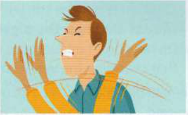
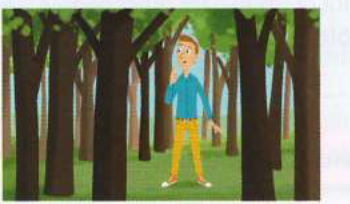

Bài tập
37.1
Chọn từ đúng để hoàn thành mỗi thành ngữ từ Phần A trang đối diện.
1
When children help you cook, you can't take your eye off the [TV / car / ball]. (Khi trẻ em giúp bạn nấu ăn, bạn không thể lơ là cảnh giác [take your eye off the ball].)
2
You're refusing to speak to her now, but I suspect you'll feel differently in the cold [time / air / light] of day. (Bây giờ bạn đang từ chối nói chuyện với cô ấy, nhưng tôi nghi ngờ rằng bạn sẽ cảm thấy khác đi khi nhìn nhận lại một cách tỉnh táo [in the cold light of day].)
3
I really don't want to make a speech at my friend's wedding - I'm sure I'll make a total [pig's / dog's / cow's] ear of it. (Tôi thực sự không muốn phát biểu tại đám cưới của bạn mình - tôi chắc chắn mình sẽ làm hỏng bét mọi chuyện [make a pig's ear of it].)
4
Trying to park in town was an absolute [nightfall / nightcap / nightmare] this morning. (Cố gắng tìm chỗ đỗ xe trong thị trấn sáng nay thực sự là một cơn ác mộng [nightmare].)
5
Dan's behaving very strangely. Do you think he's finally lost the [map / plot / plan]? (Dan đang cư xử rất kỳ lạ. Bạn có nghĩ anh ấy cuối cùng đã mất phương hướng [lost the plot] rồi không?)
37.2
Những bức tranh này làm bạn liên tưởng đến những thành ngữ nào?
1
3

2

4
37.3
Nối phần đầu của mỗi câu với phần cuối tương ứng.
1
I'm not making as many sales as I used to. I must be losing my (Tôi không còn bán được nhiều hàng như trước nữa. Có vẻ như tôi đang dần mất đi)
a
corner. (thế bí [in a tight corner - rơi vào thế bí / ở thế bí].)
2
I don't know why Bill is still so determined to settle a (Tôi không hiểu sao Bill vẫn quyết tâm muốn tính)
b
accidents. (xui xẻo liên tiếp [chapter of accidents - chuỗi xui xẻo liên tiếp].)
3
I wonder if you could help me out of a tight (Tôi tự hỏi liệu bạn có thể giúp tôi thoát khỏi thế)
c
the ball. (tập trung [take one's eye off the ball - lơ là cảnh giác / mất tập trung].)
4
His neighbours' new car certainly put Ted's nose out of (Chiếc xe mới của hàng xóm chắc chắn đã làm Ted cảm thấy)
d
touch. (khả năng trước đây [lose one's touch - xuống phong độ / mất đi kỹ năng trước đây].)
5
He realised he'd made a terrible mistake in the cold light of (Anh ấy nhận ra mình đã phạm sai lầm khủng khiếp khi nhìn nhận lại một cách)
e
score with Jack. (sổ nợ cũ với Jack [settle a score - tính sổ nợ cũ / trả đũa].)
6
No one in this business can afford to take their eye off (Không ai trong ngành kinh doanh này có thể lơ là mà mất)
f
day. (tỉnh táo [in the cold light of day - khi nhìn nhận lại một cách tỉnh táo].)
7
There have been problems all week - it's just been a chapter of (Cả tuần nay toàn gặp trục trặc - đúng là một chuỗi)
g
the trees. (toàn bộ vấn đề [see the wood for the trees - nhìn nhận rõ ràng toàn bộ vấn đề].)
8
Stand back from the problem so you can see the wood for (Hãy lùi lại một bước trước vấn đề để bạn có thể nhìn rõ)
h
joint. (phật ý [put sb's nose out of joint - làm ai đó phật ý / tự ái khó chịu].)
37.4
Đồng ý với những gì A nói. Hoàn thành mỗi đoạn đối thoại bằng một thành ngữ ở trang đối diện.
1
A: This job is really much too difficult for us now. (Công việc này thực sự quá khó đối với chúng ta bây giờ.)
B: I agree. We're in .................................................................................. (Tôi đồng ý. Chúng ta đang quá khả năng xoay xở ................................................................................. [over our heads].)
2
A: Selina has upset Gemma by going out with her ex-boyfriend. (Selina đã làm Gemma tổn thương khi hẹn hò với bạn trai cũ của cô ấy.)
B: I know, it's really ....................................................................................... (Tôi biết, đó thực sự là một gáo nước lạnh ...................................................................................... [a slap in the face].)
3
A: It will be impossible to hide our mistake. (Sẽ không thể che giấu lỗi lầm của chúng ta được.)
B: Yes, there's no point trying to ....................................................................................... (Đúng vậy, chẳng ích gì khi cố giấu nhẹm nó đi ...................................................................................... [sweep it under the carpet].)
4
A: That singer's nothing like as popular as he used to be. (Ca sĩ đó không còn được yêu thích như trước đây nữa.)
B: You're right, I think he's ....................................................................................... (Bạn nói đúng, tôi nghĩ anh ấy đang xuống phong độ ...................................................................................... [losing his touch].)
5
A: We need to get away for a while and think about the situation more clearly. (Chúng ta cần lánh đi một thời gian và suy nghĩ về tình hình một cách sáng suốt hơn.)
B: Good idea. At the moment we ....................................................................................... (Ý kiến hay đó. Hiện tại chúng ta không thể nhìn nhận vấn đề một cách sáng suốt ...................................................................................... [can't see the wood for the trees].)
6
A: I keep forgetting things recently. (Dạo này tôi cứ hay quên mọi thứ.)
B: Me too. I feel like I'm ......................................................................................! (Tôi cũng vậy. Tôi cảm giác như mình đang mất phương hướng ...................................................................................... [losing the plot]!)
7
A: You have to concentrate all the time in this job. (Bạn phải luôn tập trung cao độ trong công việc này.)
B: You're right. You can't ....................................................................................... (Bạn nói đúng. Bạn không thể lơ là cảnh giác ...................................................................................... [take your eye off the ball].)
8
A: He's got himself into a very difficult position now financially. (Hiện tại anh ấy đang tự đưa mình vào một thế rất khó khăn về mặt tài chính.)
B: Yes, he's ....................................................................................... (Đúng vậy, anh ấy đang gặp thế bí ...................................................................................... [in a tight corner].)